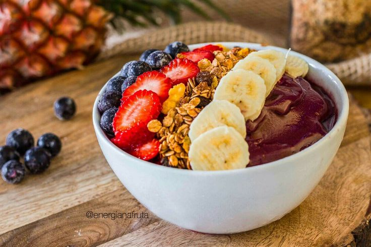

Açaí Amazônico
O verdadeiro açaí da Amazônia é consumido puro, gelado, e tradicionalmente acompanhado de farinha de tapioca, castanhas e, às vezes, frutas regionais. Rico em sabor e energia, é a essência da culinária amazônica.

Ingredientes
Serve 4 porções
- 500 g de polpa de açaí puro congelado
- 100 ml de água gelada ou leite de coco
- Farinha de tapioca ou farinha d’água para servir
- Castanhas-do-pará picadas a gosto
- Frutas amazônicas opcionais (cupuaçu, banana, etc.)
Modo de Preparo
Tempo estimado: 10 minutos
- No liquidificador, bata a polpa de açaí com a água gelada ou leite de coco até obter uma mistura cremosa e homogênea.
- Distribua em tigelas individuais.
- Polvilhe farinha de tapioca e castanhas-do-pará por cima.
- Adicione frutas amazônicas se desejar.
- Sirva imediatamente, bem gelado.
Dica do Chef: Para manter o sabor autêntico, utilize apenas polpa de açaí puro da Amazônia e evite adoçar demais. Acompanhar com castanhas e frutas da região realça a experiência amazônica.